Implements and simulates a spacecraft with reaction wheels and thrusters.
This script demonstrates:
- 3-axis earth pointing attitude control with reaction wheels and thrusters
- Disturbance modeling
- Inertia computations
- Thruster maneuvers
The control system is designed for either Earth pointing or inertially fixed attitude. It does not allow attitude maneuvers. Thrusters can be used for attitude control. Thrusters are pulsewidth modulated and off-pulse for either east/west or north/south stationkeeping. The simulation also includes a single liquid apogee engine.
It is assumed that an IMU/Star tracker package is available that outputs a valid attitude quaternion in all modes.
Disturbance modeling is for solar pressure only (geostationary orbit).
The simulation propagates the orbit, the attitude and the reaction wheel rates. The reaction wheels are assume to take torque commands and produce that torque. That is to say they have a current feedback loop that compensates for back emf.
The controller is a simple PID controller in all modes. The inertia matrix is for the deployed mode.
The wheels are Honeywell HR0610 wheels with 12 NMs max momentum at 6000 rpm. Max torque is 0.055 Nm.
The thrusters are EADS monopropellant thrusters:
http://www.space-propulsion.com/spacecraft-propulsion/hydrazine-thrusters/1n-thruster.html
CHT 0.5 0.5 N (north, east west) CHT 20 N (base panel)
The apogee engine is a 400 N "S400-12": http://www.space-propulsion.com/spacecraft-propulsion/apogee-motors/index.html
S400-12 420 N 318 sec
We put all properties into this script to make it self-contained. For more elaborate models they would be put in databases, etc.
See also Inertias, PIDMIMO, QError, QLVLH, U2Q, Constant, Plot2D, TimeGUI, TimeLabl, CosD, RK4, Date2JD, MassProp, El2RV, Period, SunV1, ThrusterCommand, RHSRWA, ThreeAxisControlDisturb ------------------------------------------------------------------------
Contents
- Setup
- Sim data
- Spacecraft properties
- Design the controller
- Select the orbital elements
- Select the initial attitude
- Four reaction wheels
- Put the state together
- Initialize the time display
- Allocate memory for plotting array
- Run the simulation
- Close the time gui
- Adjust the arrays if you quit early
- Plot
----------------------------------------------------------------------------- Copyright (c) 2007 Princeton Satellite Systems, Inc. All rights reserved. 2017.1 Update function handles -----------------------------------------------------------------------------
Setup
% Clear variables used in this demo %----------------------------------- clear sc % Global for the time interface %------------------------------ global simulationAction simulationAction = ' ';
Sim data
nSim = 2000; dT = 0.25; jD0 = Date2JD( [2010 3 15 0 0 0] ); % Control delta v demand. If any of pOn are non zero it will go into % thruster mode %------------------------------------------------------------------- pOn = 1*[ones(1,4) ones(1,13)]; % The thrusters to be used for ACS %--------------------------------- kACS = 1:12;
Spacecraft properties
%---------------------- width = 2; % Each side is 2 meters solarWingLength = 10; % A 10 kW satellite (assuming 20% efficient arrays) solarWingBoom = 1; cM = [0;0.01;0]; % A little offset to get a disturbance sc.dist.areaArray = 2*solarWingLength*width; sc.dist.areaBox = width^2; sc.dist.cM = cM; % Surface properties [ absorbed specular diffuse transmitted ] %------------------------------------------------------------- sc.dist.sigmaArray = [ 0.75; 0.17; 0.08; 0.0 ]; % Solar panel sc.dist.sigmaBox = [ 0.0; 0.29; 0.71; 0.0 ]; % Gold foil % Mass properties %---------------- massArray = solarWingLength*width*0.95; % 3 junction cells massBox = 1000; inrArray = Inertias( massArray, [width, solarWingLength], 'plate' ); inrBox = Inertias( massBox, [width width width], 'box'); cMArray = [0;width/2 + solarWingBoom + solarWingLength/2;0]; inr = [inrBox' inrArray' inrArray']; m = [massBox massArray massArray]; cM = [[0;0;0] cMArray -cMArray]; [sc.inertia, sc.mass] = MassProp( inr, m, cM, 'mks' ); % Create the thruster unit vectors. This is the force direction % [north west east base lae] %-------------------------------------------------------------- % North West East Base LAE % ---------- ---------- ----------- ---------- - tc.uT = [ 0 0 0 0 1 1 1 1 -1 -1 -1 -1 0 0 0 0 0;... 1 1 1 1 0 0 0 0 0 0 0 0 0 0 0 0 0;... 0 0 0 0 0 0 0 0 0 0 0 0 1 1 1 1 1]; tc.rT = [ 1 1 -1 -1 -1 -1 -1 -1 1 1 1 1 1 1 -1 -1 0;... -1 -1 -1 -1 1 1 -1 -1 1 1 -1 -1 1 -1 1 -1 0;... 1 -1 1 -1 1 -1 1 -1 1 -1 1 -1 -1 -1 -1 -1 -1]*width/2; tc.thrust = [ones(1,12)*0.5 ones(1,4)*20 420]; sc.inrWheel = 12/(6000*pi/30); % HR 610 sc.mu = Constant('mu earth'); c45 = CosD(45); sc.uWheel = c45*[1 0 -1 0; -1 -1 -1 -1; 0 1 0 -1]; sc.tDist = [0.0001;0.0001;-0.0001]; % Just to see the transient response sc.funDist = @ThreeAxisControlDisturb;
Warning: Colon operands must be real scalars. This warning will become an error in a future release.
Design the controller
%---------------------- [a,b,c,d] = PIDMIMO( 1, 1, 0.05, 200, 0.5, dT ); % PID States %----------- xX = zeros(2,1); xY = zeros(2,1); xZ = zeros(2,1); % Controller output %------------------ u = zeros(3,1);
Select the orbital elements
[a i W w e M]
%----------------------------
el = [42167 0 0 0 0 0];
[r, v] = El2RV( el );
Select the initial attitude
%-------------------------------- attitude = 'LVLH'; % or burn unit vector % If attiude is a character align with LVLH, else align +z (the LAE thrust % direction with the vector attitude %------------------------------------------------------------------------- if( ischar( attitude ) ) qC = QLVLH( r, v ); w = [0;-2*pi/Period(el(1));0]; mode = 1; else qC = U2Q( [0;0;1], attitude ); w = [0;0;0]; mode = 2; end
Four reaction wheels
%---------------------
wRWA = [0;0;0;0];
q = qC;
Put the state together
%-----------------------
x = [r;v;q;w;wRWA];
Initialize the time display
%---------------------------- [ratioRealTime, tToGoMem] = TimeGUI( nSim, 0, [], 0, dT, 'Three axis demo' );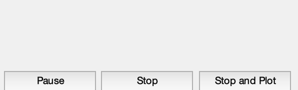
Allocate memory for plotting array
%-----------------------------------
xPlot = zeros(27,nSim);
uTC = zeros(length(kACS),nSim);
Run the simulation
------------------
for k = 1:nSim % Display the status message %--------------------------- [ ratioRealTime, tToGoMem ] = TimeGUI( nSim, k, tToGoMem, ratioRealTime, dT ); % Break up the state vector for convenience %------------------------------------------ r = x(1:3); v = x(4:6); q = x(7:10); % Julian date %------------ jD = jD0 + (k-1)*dT/86400; % Sun vector %----------- sc.dist.uSun = SunV1( jD ); % The controller %--------------- if( mode == 1 ) qC = QLVLH( r, v ); end % The attitude error %------------------- theta = QError( qC, q, 1 ); % The control %------------ u = [c*xX + d*theta(1);... c*xY + d*theta(2);... c*xZ + d*theta(3)]; % Convert angular accelerations to torque %---------------------------------------- tDemand = sc.inertia*u; % Either use thrusters or reaction wheels % Note the torque demand sign switch! %---------------------------------------- if( max(pOn) > 0 ) tDemand = -tDemand; [sc.dist.force, sc.dist.torque, uu] = ThrusterCommand( tDemand, pOn, kACS, tc ); sc.tRWA = zeros(4,1); uTC(:,k) = uu; else sc.dist.force = zeros(3,1); sc.dist.torque = zeros(3,1); sc.tRWA = pinv(sc.uWheel)*tDemand; end % Propagate the controller state. There is no limiter applied %------------------------------------------------------------ xX = a*xX + b*theta(1); xY = a*xY + b*theta(2); xZ = a*xZ + b*theta(3); % Store for plotting %------------------- xPlot(:,k) = [x;theta;sc.tRWA;tDemand]; % Integrate one step %------------------- x = RK4(@RHSRWA, x, dT, 0, sc ); % Sim control from the time gui %------------------------------ switch simulationAction case 'pause' pause simulationAction = ' '; case 'stop' return; case 'plot' break; end end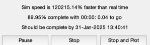
Close the time gui
%------------------- TimeGUI( 'close' );
Adjust the arrays if you quit early
%------------------------------------
j = 1:k;
xPlot = xPlot(:,j);
[tPlot, g ] = TimeLabl( (j-1)*dT );
Plot
%----- Plot2D( tPlot, xPlot( 1: 3,:), g, ['R_x (km)';'R_y (km)';'R_z (km)'], 'Position' ) Plot2D( tPlot, xPlot( 4: 6,:), g, ['V_x (km/s)';'V_y (km/s)';'V_z (km/s)'], 'Velocity' ) Plot2D( tPlot, xPlot( 7:10,:), g, ['q_s';'q_x';'q_y';'q_z'], 'Quaternion' ) Plot2D( tPlot, xPlot(11:13,:), g, ['\omega_x';'\omega_y';'\omega_z'], 'Body Rates' ) Plot2D( tPlot, xPlot(14:17,:), g, ['\Omega_1';'\Omega_2';'\Omega_3';'\Omega_4'], 'Reaction Wheel Rates' ) Plot2D( tPlot, xPlot(18:20,:)*180/pi, g, ['\theta_x (deg)';'\theta_y (deg)';'\theta_z (deg)'], 'Attitude Errors' ) Plot2D( tPlot, xPlot(21:24,:), g, ['t_1 (Nm)';'t_2 (Nm)';'t_3 (Nm)';'t_4 (Nm)'], 'Wheel Control Demand' ) Plot2D( tPlot, xPlot(25:27,:), g, ['t_x (Nm)';'t_y (Nm)';'t_z (Nm)'], 'Control Demand' ) if( max(pOn) > 0 ) Plot2D( tPlot, uTC, g, 'Thrusters', 'Thruster Time Fractions' ); end Figui %-------------------------------------- % $Id: cea8a765a87f11a82b3db6abfc8c09b7d95f5493 $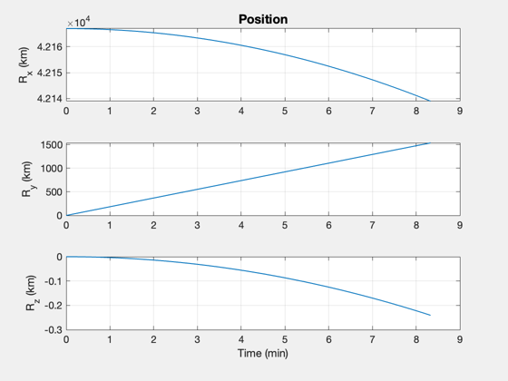 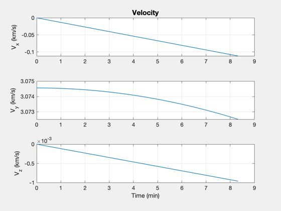 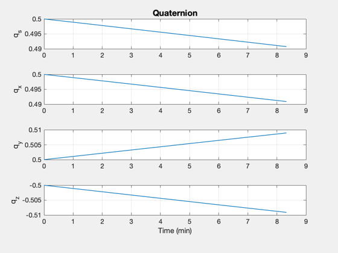 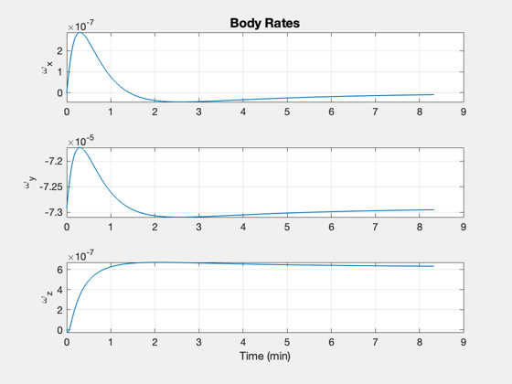 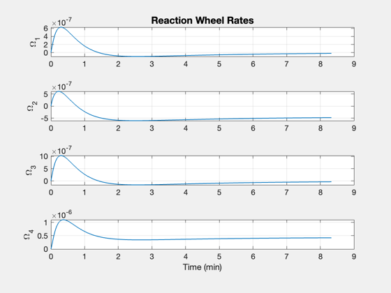 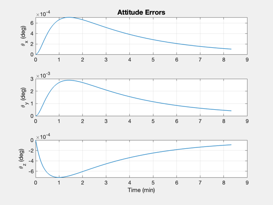 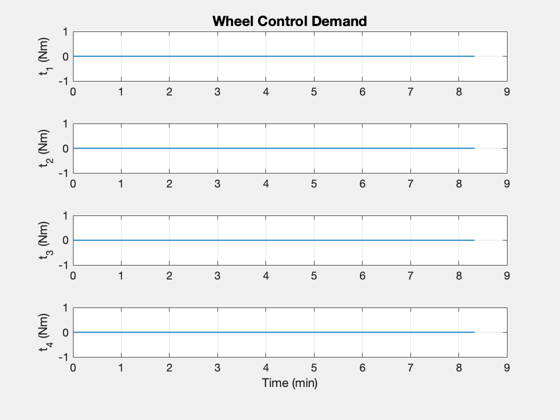 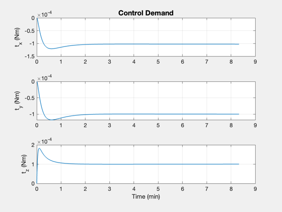 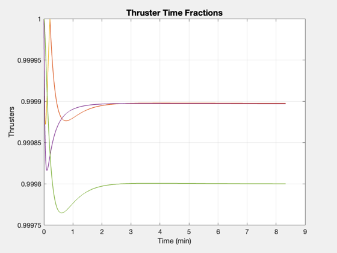 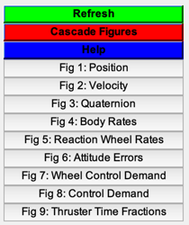